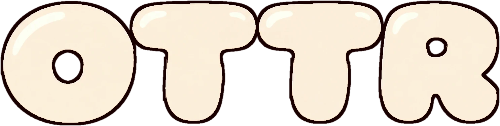

Otter SocietySelected pieces
The top of the ladder.
Three pieces that sit furthest from plain knitwear — a bare-eyed exception, a signature chain, and the only scene in the set.
How the set is built
Rules, not randomness.
Every piece shares the same six wardrobe slots. What separates them is how far each one is permitted to travel from the others.